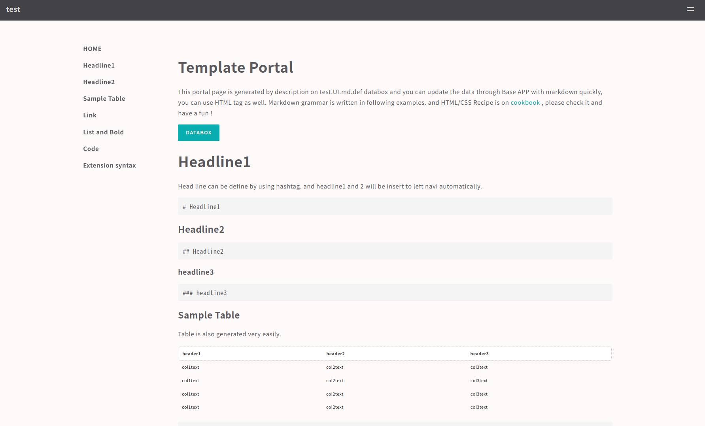
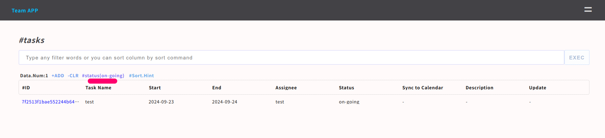
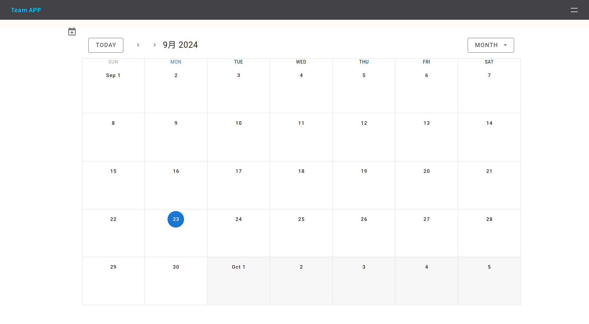

Create Custom APP
In this page, you can learn how to make custom APP and how to edit codes or portal page very quiickly. there are 4 types of Custom APP as following chart.
| Type | Auth | View | Data src | Code | Data Access |
|---|---|---|---|---|---|
| Shared Pass APP | Shared Pass Code | Markdown portal,table,form,log | specific databox | editable | Controllable per group |
| Key APP | Base64 Encrypted Key | Markdown portal,table,form,log | specific databox | editable | Controllable per user |
| Other | Any | Markdown portal,table,form,log | specific databox | editable | Customize everything |
| No auth APP | No Authentication | Markdown portal,table,form | specific databox | editable | Read only |
Required
Please setup Base APP beorehand refering to Quick Start
Common STEP
Each types of custom APP have common STEP for launching APP, difference is mainly authentication method.
- Generate Databox for datastore #gen -databox
- Generate Custom APP #gen -app
- Update portal with Markdown or HTML tag #on BaseAPP
- Add user #key APP, other
- Update bin/scripts #optional
- Add subAPP #connect additional databox if needed
Let's create custom APP by following above steps.
Generate Databox
Please generate databox that will be used for Custom APP.
sudo /usr/local/small-shell/adm/gen -databox
# -> dialog will be started
Generate APP
Let's start to generate custom APP named as just test with base64 key authentiaction. by the way you can use any other name as app_name. In this sample, we would like to use the name just test but of course you can set any prefer name you want.
sudo /usr/local/small-shell/adm/gen -app
Type of APP (1.BASE | 2.FORM | 3.CUSTOM): 3
APP Name: test
Type of Authentication (1.shared pass | 2.user key | 3.other | 4.none): 2
Primary databox: item.db
Note
If you don't need to use any databox, please input none or null as primary databox
Update portal
You can update portal page by updating markdown description of $app.UI.md.def on Base APP or edit code directly please check detail on cookbook. default portal image is here.

Add user to the APP
If you select Key APP, please add user for the APP. then you can get URL that can generate key for each end user.
sudo /usr/local/small-shell/adm/ops app:$app add.usr:$usr
e.g.) add "test_user" user for key APP name "test"
sudo /usr/local/small-shell/adm/ops app:test add.usr:test_user
--------------------------------------------------------------------
Key initializing & generating URL for test_user on test APP is here
--------------------------------------------------------------------
https://ec2-XX-XX-XX-XX.us-west-2.compute.XXXX.com/cgi-bin/auth.test?initialize=cd5e7330e5fb92b4999f2a7801da7267c802c4109a7126be47d5049cd7d5c440,6bc0917d9510ae794ab5cb5d1e65834c09ad11fbd3d78db881a656c591d1604a
Connect to the APP
End user key that's generated above command will be stored to end user browser automatically using localstorage by javascript once connected to above url.
Access URL of the APP
If you are using default Web server, your application URL must be ${FQDN}/${app} except "other" type APP. URL will be shown in the dialog of gen command.
e.g.) APP:test, URL:https://${FQDN}/test
Re-generate User key
If end user lost their key, you can generate URL for re-generating key.
sudo /usr/local/small-shell/adm/ops initialize.usr:test app:test
Update Pass code
If it's Shared Pass code APP, you can update pass code by updating file directly
sudo vi /usr/local/small-shell/web/${app}.code
Update codes (optional)
Then APP will be generated to directory that you already defined in Base APP dialog. you can update codes freely. As for small-shell framework please check MVC model
Target codes
# actionscripts
$bin (/var/www/bin)
# HTML defs
$def(/var/www/def)
Parameter change ($bin)
In this example, accesible key of databox is changed. In the default permission, end user can access all keys of databox from the Custom APP.
e.g) restrict data keys
sudo vi /var/www/bin/test_get.sh
--code--
# Target databox and keys
#keys=all
keys=item_name,description
--------
HTML def ($def)
Draft design of HTML is already generated, and you could customize them freely.
sudo vi /var/www/def/test_main.html.def
sudo vi /var/www/def/test_table.html.def
Use member list
If you want to import user list on your APP Form. you can select "mls" as data type in the gen dialog of data box creation. mls can import user list of your custom APP. following is just example.
key(col2) name: assignee
key(col2) label: Assignee
data type (text | select | radio | checkbox | email | num | tel | date | date-time | url | textarea | file | pdls | mls): mls
Tagging on Custom APP
You can add search tag to the table by ops command
sudo /usr/local/small-shell/adm/ops add.tag:$databox{key{word}} app:$app_name
e.g.)
sudo /usr/local/small-shell/adm/ops add.tag:tasks{status{on-going}} app:tasks

Change user permission
User permission could be changed ops command with app option.
# change to read only
sudo /usr/local/small-shell/adm/ops set.attr:$user{ro} app:$app
# change to read / write
sudo /usr/local/small-shell/adm/ops set.attr:$user{rw} app:$app
You can add any extension information to user attribute. following is exmaple to set attribute to ken as admin for management APP.
# user=ken app=management
sudo /usr/local/small-shell/adm/ops set.attr:ken{admin=yes} app:management
# confirm permission
sudo -u small-shell /usr/local/small-shell/bin/meta get.attr:management/ken{admin}
>yes
update def
If you delete or put of actionlink please update get.html.def directly
# e.g ) add delete function to test APP
# sudo vi /var/www/def/sapp_get.html.def
sudo vi /var/www/def/test_get.html.def
--code--
<div class="action_links">
<span><p style="cursor: pointer" onclick="window.open('./test?%%params&req=log_viewer&id=%%id', 'log_viewer', 'width=820,height=280')">Show data update history</p></span>
<span><p style="cursor: pointer" onclick="del_confirmation()">Delete</p></span>
--------
Sub APP
Basically custom APP connect to only 1 databox. and Sub APP is the way to add databox to your custom APP additionally. In this following exmapmle, databox:inventory.db subapp:inventory will be added to custom APP that name is test.
Note
subAPP must be belong to parent APP, please define subapp as $subAPP_name@$parentAPP_name
sudo /usr/local/small-shell/adm/gen -app
Type of APP (1.BASE | 2.FORM | 3.CUSTOM): 3
APP Name: inventory@test
Subapp databox: inventory.db
Once subAPP deployed, please check routing and menu that will be updaated automatically. and you can freely modify them.
# routing
# sudo cat /var/www/cgi-bin/${parent_app}
sudo cat /var/www/cgi-bin/test
# menu
# cat /var/www/desciption/common_parts/${parent_app_common_menu}
cat /var/www/desciption/common_parts/test_common_menu
Portal page link will be updated as well. please check on Base APP.
Meta link
You can generate links that can be used in the APP. please do not delete %%session in the link. then it will be replaced to a dynamic session and pin code. These links could be used in html def of your APP and it can connect table of primary databox of your APP or it can connect action links such like new or get data in the APP.
sudo -u small-shell /usr/local/small-shell/bin/meta get.link:$app
for subapp
sudo -u small-shell /usr/local/small-shell/bin/meta get.link:$subapp@$parent_app
Import APP from template
Creating APP template is sub project of small-shell. you can import APP template from git sub projects.
Team APP
This APP template could manage not only Team events, but also tasks, shared drive, bookmarks and inquiries as easy ticketing system.
Team APP funcions
| Function | type | Description |
|---|---|---|
| Calendar | portal | Manage team events in portal page |
| Announcements | sub-app | Share announcement to the team |
| Tasks | sub-app | Manage team tasks {assignment,status,deadline,sync_calendar} |
| Inquiries | sub-app | Manage inquiryes from external users |
| Drive | sub-app | Provide storage that have optional link to share file to external users |
| Bookmarks | sub-app | Manage bookmarks |
| Inquiry | form | Inquiry Form to the Team |
Link to code is here
cd $HOME
git clone https://github.com/naruoken/small-shell-apps
cd small-shell-apps/team_app
#if you already careated events and tasks databoxes, please delete it.
#rm -rf /usr/local/small-shell/databox/events
#rm -rf /usr/local/small-shell/databox/tasks
# Deploy Team APP, shell can createe databox as well
sudo ./deploy.sh
Add user to Team APP
Please add user to the APP, Then you can get key to access team portal.
sudo /usr/local/small-shell/adm/ops app:team add.usr:test

Access ULR of Team APP
There is 2 URL for using Team APP, 1 is for APP user, 1 is external user for inquiry. please try to use.
# Team APP
https://${FQND}/team
# Inquiry Form
https://${FQDN}/inquiry
Oauth integration
If you want to use Oauth, it's recommended to select other type APP.
sudo /usr/local/small-shell/adm/gen -app
Type of APP (1.BASE | 2.FORM | 3.CUSTOM): 3
app_name: oauth_test
Type of Authentication (1.shared pass | 2.user key | 3.other | 4.none): 3
We made sample script that can be integrated with Oauth provider, please get each parameter from Oauth provider beforehand.
# input small-shell app name
app="oauth_test"
echo $app
cd $HOME
git clone https://github.com/naruoken/small-shell-apps
# select provider
provider="gcp"
cd small-shell-apps/oauth_sample/authorization_code
# UPDATE PARAMA
vi ./cgi-bin/${provider}_auth
#------------------------------------------------
# target params
exchange_token_uri=""
user_info_req_uri=""
redirect_uri=""
client_id=""
client_secret=""
target_claim=""
#-------------------------------------------------
# sample input
#------------------------------------------------
#exchange_token_uri="https://oauth2.googleapis.com/token"
#user_info_req_uri="https://www.googleapis.com/oauth2/v1/userinfo?"
#redirect_uri="http://XXX/cgi-bin/auth.oauth_test"
#client_id="XXX.apps.googleusercontent.com"
#client_secret="XXXX"
#target_claim="email"
vi ./def/${provider}_oauth_form.html.def
#------------------------------------------------
# target params
var CLIENT_ID = '';
var REDIRECT_URI = '';
var OAUTH_END_POINT = '';
var SCOPE = '';
var STATE = '';
#-------------------------------------------------
# sample input
#------------------------------------------------
# var CLIENT_ID = 'XXXX.apps.googleusercontent.com';
# var REDIRECT_URI = 'http://XXXX/cgi-bin/auth.oauth_test';
# var OAUTH_END_POINT = 'https://accounts.google.com/o/oauth2/v2/auth';
# var SCOPE = 'https://www.googleapis.com/auth/userinfo.email';
# var STATE = 'statee';
#------------------------------------------------
# DEPLOY
authkey=$(grep authkey= /var/www/cgi-bin/auth.$app | sed "s/authkey=\"//g" | sed "s/\"//g")
echo $authkey
cat ./cgi-bin/${provider}_auth | sed "s/%%authkey/${authkey}/g" | sed "s/%%app/${app}/g" > .auth.$app
sudo cp .auth.$app /var/www/cgi-bin/auth.$app
. /usr/local/small-shell/web/base
cat ./def/${provider}_oauth_form.html.def | sed "s#%%static_url/#$static_url#g" | sed "s/%%app/${app}/g" > .${app}_auth_form.html.def
sudo cp .${app}_auth_form.html.def /var/www/def/${app}_auth_form.html.def
sudo chmod 755 /var/www/cgi-bin/auth.$app
Then you can try to connect APP through Oauth.
https://${fqdn}/cgi-bin/auth.oauth_test
Delete Scratech APP
You can delete your custom APP by using util script as following.
usage: sudo /usr/local/small-shell/util/scripts/del_app.sh $app
Technical Tips
This is technical Tips. It could be hint for making your own custom APP.
1. Get ID & key's value
You can get text name using ID and key using "none" format
@bin/script (shell)
# get name which will be issued
DATA_SHELL="sudo -u small-shell ${small_shell_path}/bin/DATA_shell session:$session pin:$pin"
book_name=$($DATA_SHELL databox:book.master action:get key:name id:$id format:none | $AWK -F ":" '{print $2}')
2. ID search by using Name
You can also get ID using 100% matched text
@bin/script (shell)
# get book ID Based on the name
DATA_SHELL="sudo -u small-shell ${small_shell_path}/bin/DATA_shell session:$session pin:$pin"
book_id=$($DATA_SHELL databox:book.master command:show_all[match=name{$book_name}] format:json | jq '.[] | .id'| $SED -s "s/\"//g")
3. Json insert to javascript instance
In terms of integration with javascript frameworks, we would like to recommend to insert bulk of json datas to javascript directly using %% tag because ajax with small-shell will take 1 or 2 sec for getting data.
Json technique (javascript in html def)
events: [
// %%events
],
generator in bin/${app}_main.sh
sudo vi /var/www/bin/${app}_main.sh
--code--
# -----------------
# generate json
# -----------------
$DATA_SHELL databox:${app}.events command:show_all format:json \
| $SED "s/{%%%%%%%%%%%%%%%%%}/'/g"\
| $SED "s/{%%%%%%%%%%%%%%%%}/%/g"\
| $SED "s/{%%%%%%%%%%%%%%%}/*/g"\
| $SED "s/{%%%%%%%%%%%%%%}/$/g"\
| $SED "s/{%%%%%%%%%%%%%}/\#/g"\
| $SED "s/{%%%%%%%%%%%%}/|/g"\
| $SED "s/{%%%%%%%%%%%}/\]/g"\
| $SED "s/{%%%%%%%%%%}/\[/g"\
| $SED "s/{%%%%%%%%%}/)/g"\
| $SED "s/{%%%%%%%%}/(/g"\
| $SED "s/{%%%%%%%}/_/g"\
| $SED "s/{%%%%%%}/,/g"\
| $SED "s/{%%%%%}/\//g"\
| $SED "s/{%%%%}/\&/g"\
| $SED "s/{%%%}/:/g" > /var/www/tmp/${session}/events
# -----------------
# render HTML
# -----------------
cat /var/www/def/gentest_main.html.def | $SED -r "s/^( *)</</1" \
| $SED "/%%common_menu/r /var/www/def/common_parts/gentest_common_menu" \
| $SED "s/%%common_menu//g"\
| $SED "/%%events/r /var/www/tmp/${session}/events" \
| $SED "/%%event_add_btn/r /var/www/tmp/${session}/event_add_btn" \
| $SED "s/%%event_add_btn//g"\
| $SED "s/%%user/${user_name}/g" \
| $SED "s/%%session/session=${session}\&pin=${pin}/g" \
| $SED "s/%%params/session=${session}\&pin=${pin}/g"
--------
4. Disable portal
If your APP will not use portal, please change main request to table by adding these codes.
sudo vi /var/www/cgi-bin/${app}
--code--
if [ "$req" = "main" ];then
req=table
fi
--------